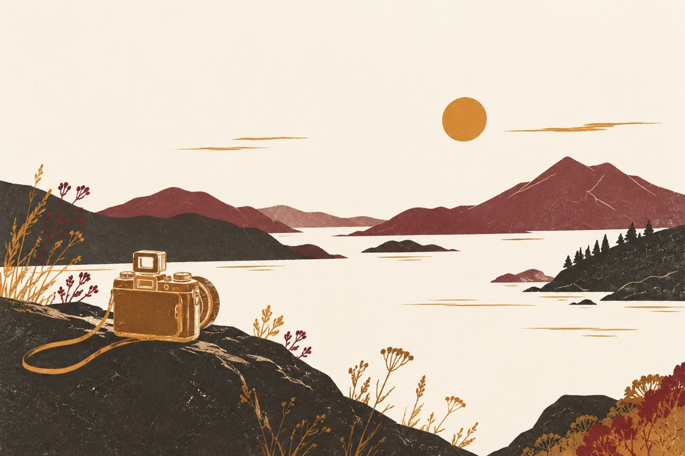

A PHOTOGRAPHY JOURNALsmall prompts.
small prompts.
new ways of seeing.
Choose a theme, pick up your camera, and make something yours.

find a theme
your challenges
THE CHALLENGE LIBRARY
challenge library
Find a prompt for wherever you are.
YOUR COLLECTION
your collection
Your saved ideas and completed challenges live here on this device.
0saved
0completed
my challenges
saved on this devicePHOTOGRAPHY FIELD GUIDE
techniques
Ways to try something different with any camera.
THE FIELD GUIDE
Practical techniques to take on your next photo walk.
◉
a camera is a camera.
Film, digital, or the one on your phone. What matters is looking.